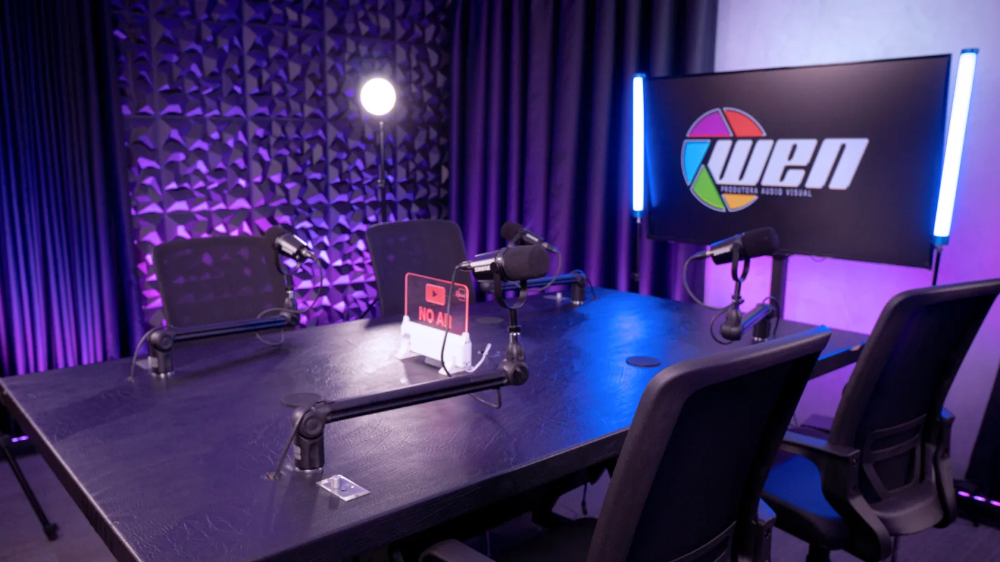
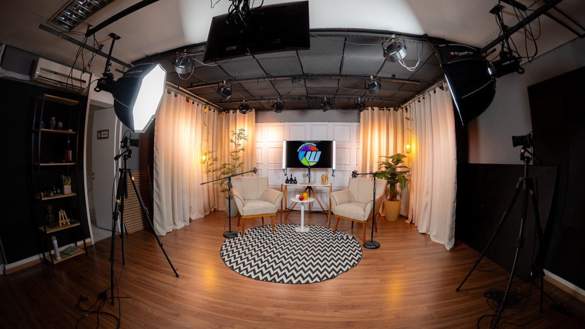
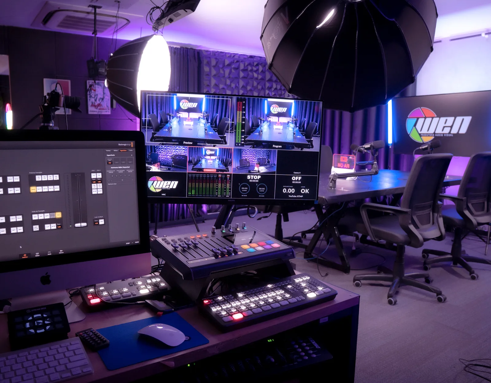
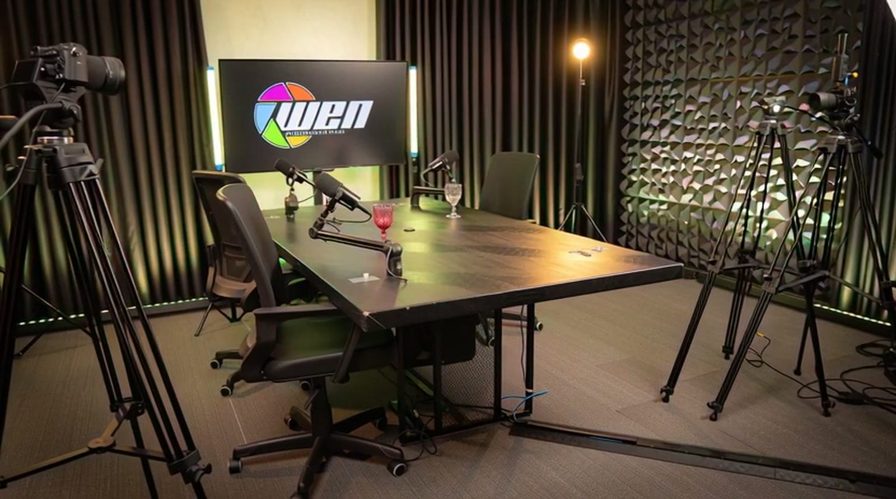
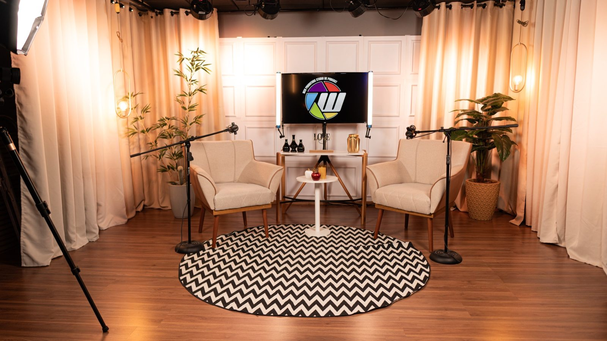

Oportunidade freelancer
Freelancer de Audiovisual — Studio WEN
A técnica importa. Sua atitude faz a diferença.
Procuramos alguém que goste de colocar a mão na massa para fazer cada gravação acontecer: montar o cenário, preparar os equipamentos, operar câmeras e mesa de corte e apoiar a equipe do começo ao fim. Se você é organizado, se comunica bem e quer aprender, queremos conhecer você.
Local Cerqueira César, São Paulo/SP
O estúdio
Conheça o Studio WEN
O Studio WEN é o espaço de produção da WEN Produtora, em São Paulo. São dois estúdios no mesmo prédio, na Rua Haddock Lobo, em Cerqueira César (região dos Jardins): o Studio A e o Studio B, que tem 180 m² e recebe gravações com plateia de até 30 pessoas.
Aqui acontecem podcasts, videocasts, lives, cursos e conteúdos corporativos. A operação usa câmeras Sony e switchers Blackmagic ATEM, e cada cenário é montado de acordo com o projeto de cada cliente.
Onde fica
Cerqueira César · São Paulo/SP
Rua Haddock Lobo, 1307 — Studio A (sala 154) e Studio B (sala 181)
Ver localização (abre o Google Maps em nova aba)
O que produzimos
Serviços do estúdio
-
01
Podcast e videocast
Gravação em estúdio com cenário, câmeras, áudio e operação técnica.
-
02
Lives e transmissões
Transmissões ao vivo e eventos online e híbridos.
-
03
Cursos e treinamentos
Gravação de aulas, cursos EAD e treinamentos.
-
04
Conteúdo corporativo
Podcasts corporativos e produção audiovisual para empresas.
Por dentro
O espaço onde você vai trabalhar



A vaga
O que você vai fazer
Você vai participar da preparação e da operação das produções, junto com a equipe.
- Montar e desmontar cenários.
- Organizar o estúdio, os equipamentos e os materiais.
- Preparar equipamentos e apoiar os testes antes das gravações.
- Operar a mesa de corte de vídeo, também chamada de switcher.
- Operar câmeras quando necessário.
- Apoiar a equipe durante as produções.
Perfil
Quem buscamos
O conhecimento técnico conta, mas o que mais valorizamos é iniciativa, cuidado com os equipamentos, trabalho em equipe e vontade de aprender. Aceitamos candidaturas de quem tem conhecimento básico, intermediário ou avançado em audiovisual.
Comportamento
- Proatividade para perceber necessidades e tomar iniciativa, alinhando prioridades com a equipe.
- Boa comunicação para ouvir, tirar dúvidas e avisar sobre problemas.
- Organização e cuidado com o ambiente e os equipamentos.
- Responsabilidade e pontualidade.
- Facilidade para trabalhar em equipe.
- Interesse em aprender e desenvolver habilidades técnicas.
Diferenciais técnicos
Não são obrigatórios. Contam a favor, sem exigência de domínio avançado.
- Experiência com câmeras Sony.
- Experiência com switchers Blackmagic ATEM.
- Vivência em gravações e operação de estúdio.
Como funciona
Sobre a oportunidade
-
Freelancer, conforme a demanda
A atuação é inicialmente como freelancer, de acordo com a demanda de produções do estúdio.
-
Disponibilidade combinada
Dias e horários são combinados com você para cada trabalho.
-
Preparação e operação
Você participa da montagem, da preparação e da operação das gravações.
-
Equipamentos profissionais
Contato no dia a dia com câmeras Sony e switchers Blackmagic ATEM.
Candidatura
Candidate-se
Leva cerca de 10 minutos. Campos marcados com são obrigatórios.
Candidatura enviada!
Obrigado pelo interesse em fazer parte das produções do Studio WEN. Entraremos em contato caso seu perfil seja selecionado.